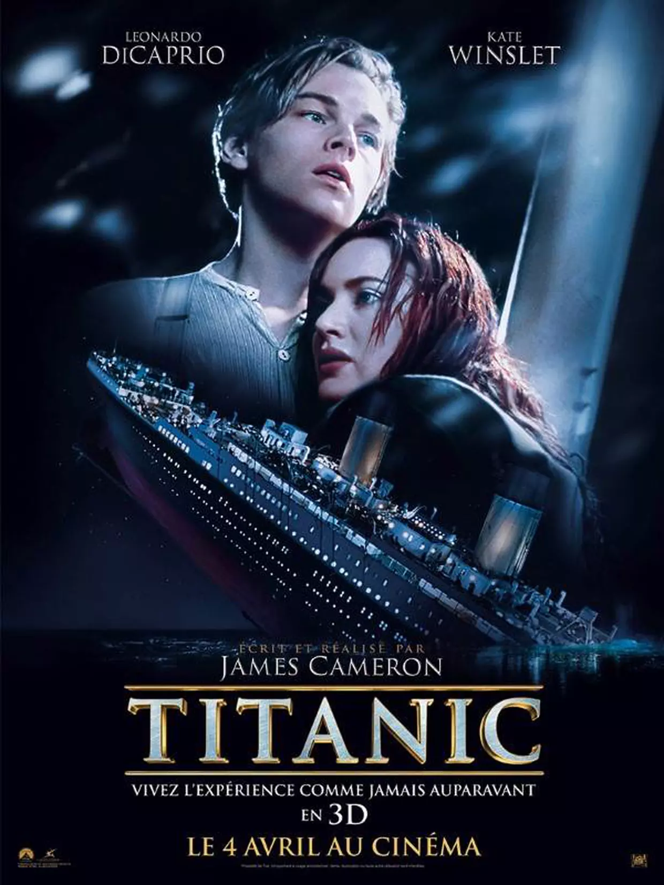

Ce site a été réalisé par VOTRE NOM ET PRENOM
TITANIC

Résumé:
En 1997, l'épave du Titanic est l'objet d'une exploration fiévreuse, menée par des chercheurs de trésor en quête d'un diamant bleu qui se trouvait à bord. Frappée par un reportage télévisé, l'une des rescapées du naufrage, âgée de 102 ans, Rose DeWitt, se rend sur place et évoque ses souvenirs. 1912. Fiancée à un industriel arrogant, Rose croise sur le bateau un artiste sans le sou.
Année de Sortie :1997
Réalisateur :James Cameron
Acteurs Principaux :
Leonardo DiCaprio (Jack Dawson)
Kate Winslet
Billy Zane
Kathy Bates
Bande-Annonce du Film: